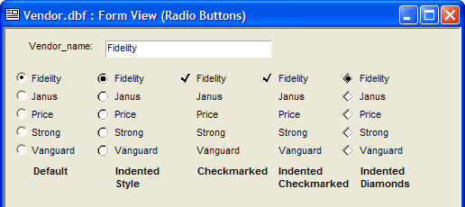

Setting Choices for Radio Buttons
A data field displayed as a set of radio buttons accepts only values that are in its choice list. These images show the same radio buttons where the bounding rectangle is narrow and wide.


Select the control, choose Object > Properties and display the Setup tab.
Select "Radio Button" in the Field-Type list.
Display the Choices tab.
Select one of the Choices for control. The options are:
- "User Defined"
- "Populated using Xbasic"
Optionally, make a selection from the Radio style list. The options are:
- "Checkmarked"
- "Default Style"
- "Indented Checkmarked"
- "Indented Diamonds"
- "Indented Style"

If you selected "User Defined" in step 4:
Select the Display style. The options are:
"Bitmap followed by text"
"Bitmap only"
"Bitmap over text"
"Text followed by bitmap"
"Text only"
"Text over bitmap"
Enter choices one per line. Refer to Specifying User Defined Choices.
Optionally, click
 or
or  to sort the entries in ascending or descending order.
to sort the entries in ascending or descending order.
If the selection in step 5a included bitmaps, click Define bitmaps... to display the Define Bitmaps dialog box. Otherwise, click OK to save your choices definition.
In the Define Bitmaps dialog box select each entry in turn and click Define Bitmap to display the Define Picture dialog box.
In the Define Picture dialog box optionally check Button displays a different picture when a button is pressed. This causes the Pressed tab to appear.
Optionally, on the Default tab click Embedded and Select Embedded Bitmap. Navigate to the image, select it, and click Open.
Optionally, on the Default tab click File and
 . Navigate to the image, select it, and click Open.
. Navigate to the image, select it, and click Open.Optionally, on the Default tab click Internal and
. Select the image from the Insert Image dialog box, and click Insert.If the Pressed tab is visible, display it, and select another image in the same manner as Described by steps 5h through 5j.
Click OK, OK and OK to save your choices definition.
If you selected "Computed Automatically" in step 4:
Click OK to save your property settings.
Right click on the form and select Events > OnInit.
In the Create new Event Script dialog select Create using Xbasic and click OK.
Enter Xbasic code structured as follows. Substitute your control's name for
. Optionally, substitute your list of choices, one per line, for:
...
DIM pObj as P pObj = topparent: pObj.settings.dynamic_list = <<%str% ... %str% |
Optionally, substitute a call to a function that returns a CR-LF delimited list for:
<<%str%
...
%str%
DIM pObj as P pObj = topparent: pObj.settings.dynamic_list = MyFunction() |
See Also
Specifying Choices, Setting Choices for List and Combo Boxes, Setting Choices for Record Lists